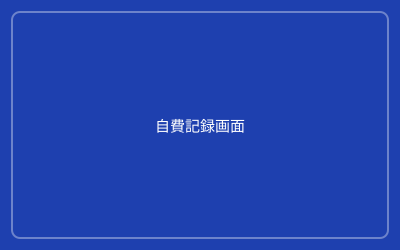

日々の自費記録・品目マスタ
介護サービスや日用品などの自費項目を日別に記録し、品目をマスタ管理して請求に連携します。
入居者ごとの自費サービスを漏れなく記録し、正確な請求データを生成します。
こんな課題ありませんか？
自費記録が手書きやExcelで煩雑
日々の自費サービス（おやつ・日用品・理美容等）を記録する際に、
手書きノートやExcelで管理しているため、記録漏れや転記ミスが発生しやすい。
品目ごとの単価管理が一貫していない
同じ自費サービスでも、担当者によって単価が異なる場合があり、
請求金額にばらつきが生じて施設内でのサービス提供に不公平が生じる。
月末の請求処理に時間がかかる
散らかった自費記録を月末に集計し、請求データに反映する作業に
時間がかかり、請求締め日が遅れがちになる。
あんしんの解決方法
日々の自費記録をデジタル化し品目をマスタ管理
タブレットやPCで日々の自費サービスを記録し、品目・単価・税区分をマスタで管理。
記録したデータは自動的に月次請求に連携され、請求書に反映されます。

品目マスタ管理
一元管理された品目マスタで統一されたサービス提供
自費サービスの品目（おやつ・日用品・理美容・クリーニング等）とその単価・税区分を
マスタで一元管理し、施設全体で同じサービスに対して同じ単価が適用されます。
自費記録の操作フロー
シンプルな記録プロセスで毎日5秒の入力を実現
請求処理への自動連携
記録データが自動的に月次請求に反映
日々記録された自費データは、自動的に対象月の請求データに蓄積されます。
月次請求一括生成時に、家賃・管理費と同様に自費合計が計算され、請求書に含まれます。
導入による効果
自費記録作業時間大幅削減
1人あたりの自費記録作業時間が
2分 → 10秒
（90%削減）
記録漏れ・転記ミスゼロ
デジタル記録による自動連携で
記録漏れ・転記ミスゼロを実現
月末請求処理時間の短縮
自費記録の月末集計作業が不要になり、
月末請求処理時間を30分削減
毎日の自費記録をデジタル化して、
請求業務の正確性と効率を向上させませんか？
導入施設150+の実績が、あんしんの信頼性を証明しています。まずは無料で資料をダウンロードし、詳細をご確認ください。